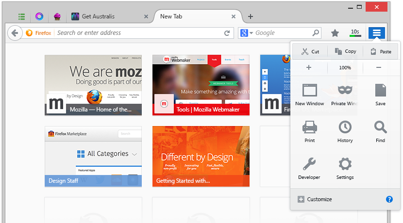

Featuring an updated visual design, streamlined tab strip, updated Firefox menu and improved customization.
Organic and fluid tab shape shows you only the active tab; so you always know where you are.
The updated Firefox menu now comes with large icons, highlights the most common functionality and is easily customized.
Arrange Firefox just the way you like it! You can easily add or remove just the items you want from the toolbars and menu panel.
With a refined and polished style, we thinks this is the most beautiful and detail-obsessed version of the Firefox interface yet.
